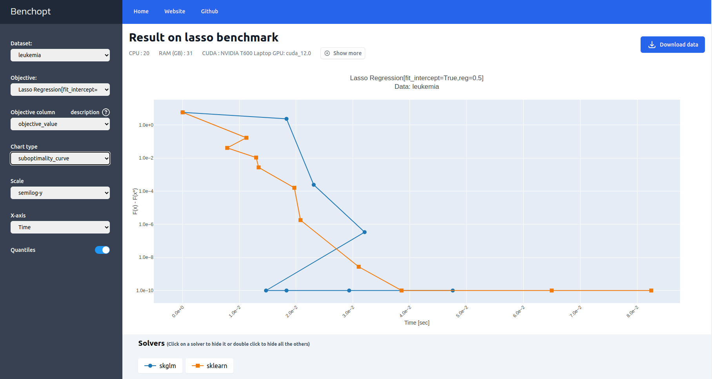

Get started#
Installation
Benchopt can be installed directly with pip.
pip install benchopt
To gain access to certain features, in particular to install the requirements of community benchmarks, benchopt needs to be installed in a conda environment.
The recommended way to use benchopt is within a conda environment to fully benefit from all its features.
Hence, start by creating a dedicated conda environment and then activate it.
conda create -n benchopt python
conda activate benchopt
Benchopt is available on PyPi.
Get the stable version via pip by running:
pip install -U benchopt
This will install the command line tool to run and process the benchmark.
Run an existing benchmark
To run an existing benchmark, you need to get the code, for instance by cloning a repository, and then use benchopt to install the requirements and run the benchmark.
git clone https://github.com/benchopt/template_benchmark_ml.git
benchopt install template_benchmark_ml
benchopt run template_benchmark_ml
This will generate a dashboard with the results of the benchmark.
Note that benchopt install will only work if benchopt is
installed in a conda environment.
Let’s get the first steps with benchopt by comparing some solvers of the Lasso problem on the Leukemia dataset.
Start by cloning the Lasso benchmark repository and cd into it.
git clone https://github.com/benchopt/benchmark_lasso.git
cd benchmark_lasso
Then, use benchopt to install the requirements for the solvers skglm, scikit-learn, and the dataset Leukemia.
benchopt install -s skglm -s sklearn -d leukemia
Finally, run the benchmark:
benchopt run . -s skglm -s sklearn -d leukemia
Note
To explore all benchopt CLI features, refer to Command line interface (CLI)
or run benchopt --help or benchopt COMMAND_NAME --help.
When the run is finished, benchopt automatically opens a window in your default browser and renders the results as a dashboard.

The dashboard displays benchmark-defined metrics tracked throughout the benchmark run such as the evolution of the objective value over time.
Create your own benchmark
Build your own benchmark by specifying:
Dataset: specifies how to load data,Objective: defines the evaluation metrics,Solver: implements the method to evaluate.
This same workflow can be reused for ML, optimization, or infrastructure.
A benchopt benchmark has three ingredients: one or more datasets, an objective (your metric or evaluation protocol), and one or more solvers (the evaluated methods). Each is a single Python file. Here is the minimal structure:
my_benchmark/
├── objective.py
├── datasets/
│ └── my_dataset.py
└── solvers/
└── my_solver.py
The tabs below show minimal examples for three common use cases. Once you are ready to go further, the Benchmark workflow section covers advanced features such as parallelization, seed control, cross-validation, or convergence tracking depending on your use case.
You have a dataset, a metric, and methods to compare. This is the simplest case: each solver runs once to completion and is evaluated with a given metric.
datasets/my_dataset.py: specifies how to load data, and potentially split it into training and test sets.
from benchopt import BaseDataset
from sklearn.datasets import make_classification
from sklearn.model_selection import train_test_split
class Dataset(BaseDataset):
name = "My dataset"
def get_data(self):
# Replace with your own data loading/splitting logic
X, y = make_classification()
X_train, X_test, y_train, y_test = train_test_split(
X, y, test_size=0.2, random_state=0
)
# This dict's keys can be changed, e.g. to have dataloader instead
return dict(
X_train=X_train, y_train=y_train,
X_test=X_test, y_test=y_test,
)
objective.py: defines the evaluation metric(s) to compare methods.
from benchopt import BaseObjective
class Objective(BaseObjective):
name = "My ML benchmark"
sampling_strategy = "run_once"
def set_data(self, X_train, y_train, X_test, y_test):
self.X_train, self.y_train = X_train, y_train
self.X_test, self.y_test = X_test, y_test
def get_objective(self):
return dict(X_train=self.X_train, y_train=self.y_train)
def evaluate_result(self, model):
return dict(test_score=model.score(self.X_test, self.y_test))
def get_one_result(self):
# for testing purpose, declare the minimal result to eval
from sklearn.dummy import DummyClassifier
return dict(
model=DummyClassifier().fit(self.X_train, self.y_train)
)
solvers/my_solver.py: implements the method to evaluate.
from benchopt import BaseSolver
class Solver(BaseSolver):
name = "My solver"
def set_objective(self, X_train, y_train):
self.X_train, self.y_train = X_train, y_train
def run(self, _):
from sklearn.linear_model import LogisticRegression
self.model = LogisticRegression().fit(
self.X_train, self.y_train
)
def get_result(self):
return dict(model=self.model)
With benchopt, you also get:
Reproducible runs (including controlled random seeds when relevant).
Parallel execution of solver/dataset combinations from the CLI.
Standardized result collection and comparison across methods.
You have an iterative solver and want to track its convergence over time.
Benchopt will call run(n_iter) with increasing budgets and record
the objective value at each step.
datasets/my_dataset.py
from benchopt import BaseDataset
import numpy as np
class Dataset(BaseDataset):
name = "My dataset"
def get_data(self):
rng = np.random.default_rng(0)
A = rng.standard_normal((100, 50))
b = rng.standard_normal(100)
return dict(A=A, b=b)
objective.py
from benchopt import BaseObjective
import numpy as np
class Objective(BaseObjective):
name = "My optimization benchmark"
def set_data(self, A, b):
self.A, self.b = A, b
def get_objective(self):
return dict(A=self.A, b=self.b)
def evaluate_result(self, x):
residual = self.A @ x - self.b
return dict(value=0.5 * np.dot(residual, residual))
def get_one_result(self):
# for testing purpose, declare the minimal result to eval
return dict(x=np.zeros(self.A.shape[1]))
solvers/my_solver.py
from benchopt import BaseSolver
import numpy as np
class Solver(BaseSolver):
name = "Gradient descent"
def set_objective(self, A, b):
self.A, self.b = A, b
self.x = np.zeros(A.shape[1])
def run(self, n_iter):
grad = self.A.T @ (self.A @ self.x - self.b)
step = 1 / np.linalg.norm(self.A) ** 2
for _ in range(n_iter):
self.x -= step * grad
def get_result(self):
return dict(x=self.x)
With benchopt, you also get:
Fair convergence comparisons using the same stopping budgets.
Cached datasets and validated solver/objective interfaces.
Automatic result aggregation and interactive plotting dashboards.
Note that benchopt also defines callbacks evaluate convergence curve at once.
See 2. Using a callback for more details.
Benchopt is not limited to ML or optimization. You can benchmark infrastructure components such as data loading, preprocessing, or serving latency. Here is an example that measures dataloader throughput.
datasets/my_dataset.py
from benchopt import BaseDataset
import numpy as np
class Dataset(BaseDataset):
name = "My dataset"
parameters = {
"data_size": [100_000],
}
def get_data(self):
return dict(data=np.zeros((self.data_size, 100)))
objective.py
from benchopt import BaseObjective
import time
class Objective(BaseObjective):
name = "Dataloader throughput"
sampling_strategy = "run_once"
parameters = {"batch_size": [64, 256]}
def set_data(self, data):
self.data = data
def get_objective(self):
return dict(data=self.data, batch_size=self.batch_size)
def evaluate_result(self, dataloader):
n_samples, t0 = 0, time.perf_counter()
for batch in dataloader:
n_samples += len(batch)
runtime = time.perf_counter() - t0
samples_per_second = n_samples / runtime
return dict(
samples_per_second=samples_per_second,
runtime=runtime,
)
def get_one_result(self):
# for testing purpose, declare the minimal result to eval
return dict(dataloader=self.data)
solvers/my_solver.py
from benchopt import BaseSolver
import torch
class Solver(BaseSolver):
name = "Pytorch dataloader"
def set_objective(self, data, batch_size):
self.data = torch.utils.data.TensorDataset(
torch.from_numpy(data)
)
self.dataloader = torch.utils.data.DataLoader(
self.data, batch_size=batch_size
)
def run(self, _):
pass
def get_result(self):
return dict(dataloader=self.dataloader)
With benchopt, you also get:
Repeated, scriptable measurements from the same command-line workflow.
Easy parameter sweeps (for example
batch_size,num_workers) and side-by-side comparisons.Caching of generated data and benchmark outputs to avoid unnecessary reruns.
Once the benchmark is created, you can run it with:
benchopt run my_benchmark
Note
The examples above are intentionally minimal. The full Template benchmark ML shows additional features such as parameter sweeps, cross-validation splits, and dataset configuration – all optional, but useful as your benchmark grows.
What’s next?#
Benchmark workflow — full guide to writing, running, and publishing benchmarks
Available benchmarks — browse benchmarks created by the community
Command line interface (CLI) — complete CLI reference